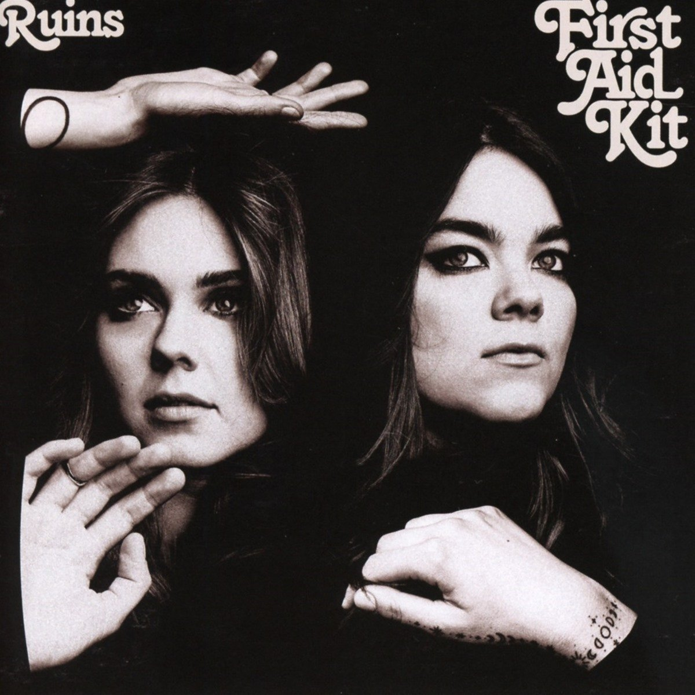

Latest Album

Ruins is the fourth studio album by Swedish sister duo, First Aid Kit. All songs were written by the sisters Klara and Johanna Soderberg, who recorded the album in Portland, Oregon; Tucker Martine then produced the album. Ruins was released January 19, 2018 by Columbia Records to critical acclaim.
Ruins Track List
- Rebel Heart
- It's a Shame
- Fireworks
- Postcard
- To Live a Life
- My Wild Sweet Love
- Distant Star
- Ruins
- Hem of Her Dress
- Nothing Has to Be True